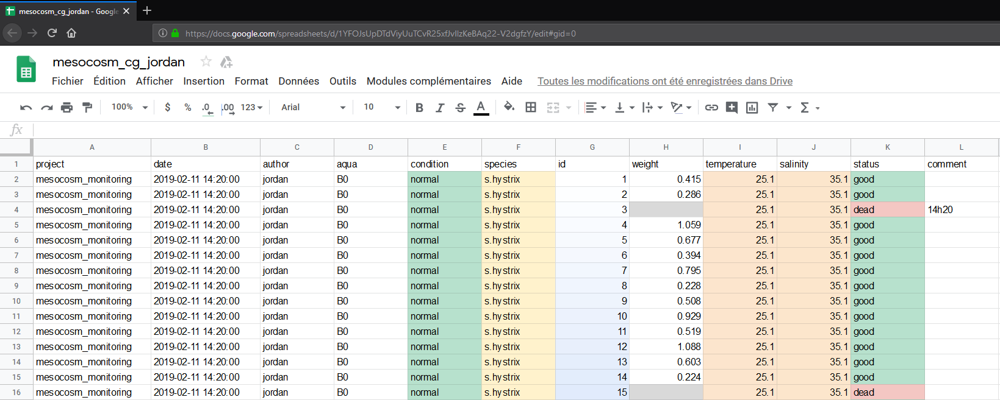

Chapitre 2 IT
Ce chapitre permet de comprendre la création de l’application CoralGrowth. ## Structure du code L’application est divisée en deux fichiers : ui.R et server.R .
Le script ui.R contient tous les éléments à afficher à l’utilisateur.
Le script server.R contient toute la partie logique (importation du jeu de donnée, transformation, calculs, …) .
Les noms des variables ont un sens pratique :
- ui_nom_de_variable : variable seulement utilisée dans le script ui.R .
- u_nom_de_variable : variable crée dans ui.R, utilisé dans server.R .
- s_nom_de_variable : variable crée dans server.R, utilisé dans server.R .
Les variables “uiOutput” sont un peu spéciales, elles sont crées dans ui.R, pour être configuré dans server.R .
L’intérêt est d’y insérer des variables retravaillées dans le script server.R . Ce qui n’est pas possible si elles avaient été directement paramétrer dans ui.R .
Elles sont paramétrées dans server.R comme n’importe quelle variable nomInput (inputId, label, …).
2.1 server.R
2.1.1 Importation
L’adresse URL est contenue dans la variable coral_url. L’URL est générée via un fichier en ligne Google sheets.

Pour cela il faut aller dans Fichier > Publier sur le web, puis choisir : Intégrer > Valeurs séparées par des virgules (.csv).
_______________________________________________________________________________
Le lien de partage au format csv contenu dans coral_url sera lu par la fonction read_csv. Cette fonction va importer le tableau de donnée et les mettre au bon format. Une grande source d’erreur provient de l’importation, il est important de respecter le nom des colonnes, ne pas jouer avec le format des colonnes, surtout pour la date qui devient facilement un problème.
Dans le tableau de donnée de base, la plupart des colonnes ont le format “texte brute”, seuls les colonnes “id”, “weight”, “temperature” et “salinity” ont un format numérique.
2.2 À notifier
2.2.1 Colonne ratio
La colonne ratio est calculée à partir de la première valeur encodée de la masse squelettique avec la valeur suivante pour chacun des ID.
Si certaines valeurs n’ont pas été rentrées lors de la première date, le ratio ne peut être calculé.
2.2.2 Colonne delta_date
La colonne delta_date est une valeur arrondie au jour près.
2.2.3 Variable dateRangeInput
La variable dateRange possède une plage minimum qui débute avec la date la plus ancienne et maximum qui est la date actuelle de l’ordinateur.
2.3 À améliorer
L’application n’est pas parfaite, elle pourrait être encore plus utile. Je mets ici quelques idées et indices.
2.3.1 Lecture de plusieurs dataframes
Il serait intéressant de pouvoir utiliser plusieurs jeux de données à la fois et de les comparer entre eux.
La fonction switch pourrait permettre de lire plusieurs dataframes.
2.3.2 URL dynamique
L’URL du tableur en ligne est directement tappé dans le script du fichier server.R. Il serait plaisant de pouvoir insérer l’URL de n’importe quel tableur directement depuis l’application.
On peut laisser un jeu de donnée par défaut.
2.3.3 Autres graphiques
Un seul type de graphique à été utilisé, il serait intéressant d’essayer d’autres visualisations.